<!DOCTYPE html>
<html lang="en">
  <head>
    <meta charset="utf-8">
    <meta http-equiv="X-UA-Compatible" content="IE=edge">
    <meta name="viewport" content="width=device-width, initial-scale=1">
    <!-- The above 3 meta tags *must* come first in the head; any other head content must come *after* these tags -->
    <meta name="description" content="">
    <meta name="author" content="">
    <link rel="icon" href="img/landing-logo.png">

    <title>Kritical Health</title>

    <!-- Bootstrap core CSS -->
    <link href="css/bootstrap.min.css" rel="stylesheet">

    <!-- IE10 viewport hack for Surface/desktop Windows 8 bug -->
    <link href="css/ie/ie10-viewport-bug-workaround.css" rel="stylesheet">
    <link href="css/landing-style.css" rel="stylesheet">
    <link href="css/landing-responsive.css" rel="stylesheet">
    <!-- Just for debugging purposes. Don't actually copy these 2 lines! -->
    <!--[if lt IE 9]><script src="../../assets/js/ie8-responsive-file-warning.js"></script><![endif]-->
    <script src="js/ie/ie-emulation-modes-warning.js"></script>

    <!-- HTML5 shim and Respond.js for IE8 support of HTML5 elements and media queries -->
    <!--[if lt IE 9]>
      <script src="https://oss.maxcdn.com/html5shiv/3.7.3/html5shiv.min.js"></script>
      <script src="https://oss.maxcdn.com/respond/1.4.2/respond.min.js"></script>
    <![endif]-->

  </head>
<!-- NAVBAR
================================================== -->
  <body>
    <div class="navbar-wrapper" id="header">
        <nav class="navbar navbar-inverse  navbar-fixed-top topbar">
          <div class="container-fluid">
            <a class="navbar-brand" href="home.html">
              
            </a>
            <div class="navbar-header">
              <button type="button" class="navbar-toggle collapsed" id="feature-toggle" >
                <span class="sr-only">Toggle navigations</span>
                <span class="icon-bar"></span>
                <span class="icon-bar"></span>
                <span class="icon-bar"></span>
              </button>
            </div> 
            
            <div class="clearfix visible-xs"></div>
            <div id="navbar" class="navbar-collapse collapse">
              <ul class="nav navbar-nav hidden-xs left-navbar ">
                <li><a href="signup.html" class="btn btn-lndgtop landing-btn b-signup">Sign Up</a></li>
                <li><a href="login.html" class="btn btn-lndgtop landing-btn b-login">Log In</a></li>
              </ul>
              <ul class="nav navbar-nav navbar-right nav-right pull-right list-inline" style="">
                    <li><a href="about.html"> About Us <span></span></a></li>
                    <li><a href="management.html">Our Management<span></span></a></li>
                    <li class="active"><a href="advisors.html">Advisors<span></span></a></li>
              </ul>
            </div>
           
          </div>

        </nav>
    </div>

    <div class="clearfix"></div>
    <div style="display: none;" class="menu-slide">
      <span class="menuclose"></span>
      <div class="menu-mainmenu-container">
        <div class="mainmenu-cont">
          <div class="row">
            <div class="col-xs-12">
                <ul class="">
                  <li> <a href="about.html">About Us</a> </li>
                  <li class="active"> <a href="management.html">Our Management</a> </li>
                  <li> <a href="advisors.html">Advisors</a> </li>
                  <div class="spacer20"></div>
                  <li> <a href="signup.html">Sign Up</a> </li>
                  <li> <a href="login.html">Log In</a> </li>
                </ul>
            </div>
            
          </div>
        </div>

      </div>
    </div>

    <div class="base-innercontent">
      <div class="spacer70"></div>
      <div class="spacer70 hidden-xs"></div>
      <div class="container">
        <div class="base-header">
          <div class="base-header-head">
              <div class="row ">
                <div class="col-sm-6 ">
                  <div class="spacer20 visible-xs"></div>
                  <div class="mngt-content">
                    <div class="mngt-contentinner">
                      <div class="mngt-fone">
                        
                      </div>
                      <div class="mngt-stwo">
                        <h1>ADVISORS</h1>
                      </div>
                      
                    </div>
                  </div>
                </div>
                <div class="col-sm-6">
                  <div class="clearfix"></div>
                  
                  <div class="spacer20 visible-xs"></div>
                </div>
              </div>
          </div>
        </div>
        <div class="base-content">
            <div class="spacer20"></div>
            <div class="row advisors advisor1">
              <div class="col-sm-4">
                
                <div class="spacer20"></div>
              </div>
              <div class="col-sm-8">
                <div class="mg-person-block">
                    <h3 class="text-navy mg-top0">R Balasubramanian</h3>
                    <h5 class="text-aqua font-medium">Advisor Kritical Health</h5>
                    <div class="spacer10"></div>
                    <div class="mg-person-details">
                        <p>A  proven,  results-driven  and  top  management  professional  with  progressive  experience  of over 4 decades in diverse industries, culture and corporate settings.</p>
                        <p>Strong  operational &  strategic  background, involved in  effective  establishment  of  new  back & front-end functions for the organisation worked for.</p>
                        <p>Served  as  Member  of  the  Working  Group  on  Animal  Husbandry,  Planning  Commission  for the 9th Five Year Plan.</p>
                        <p>Member of Meat food product advisory committee, Ministry of Rural  Areas & Employment, GOI, New Delhi. </p>
                        <p>Served as a Director on the Board of 8 companies of VH Group of Industries. </p>
                        <p>Passionate  about  community  development  &  tenacious  in  the  pursuit  of  goals;  Assessing (NGO  and  other)  projects  proposals  especially  in  the  field  of  rural  and socio-economic development; preparing recommendations for financial support through project proposals </p>
                        <p>Proven experience in the execution of Green Field Projects.</p>
                        <p>He is an alumnus of IIM – Ahmedabad  (PGDBA –1966-9168), and in his vast career has been on theboard ofseveral prestigious organizations.  </p>
                    </div>
                </div>
              </div>
              <div class="clearfix"></div>
              <div class="spacer20"></div>
              <div class="bottom-line-light"></div>
              <div class="spacer20"></div>
              <div class="spacer20"></div>
            </div>
            <div class="row advisors advisor2">
              <div class="col-sm-4">
                
                <div class="spacer20"></div>
              </div>
              <div class="col-sm-8">
                <div class="mg-person-block">
                    <h3 class="text-navy mg-top0">Vijayasimha Ajarananda</h3>
                    <h5 class="text-aqua font-medium">Advisor Kritical Health</h5>
                    <div class="spacer10"></div>
                    <div class="mg-person-details">
                        <p>Graduated from BITS Pilani, in 1979, he has spent over 30 years in product development, production engineering, manufacturing and market entry strategy in areas such as high precision analytical instruments, tribology and measurement systems, semiconductor manufacturing, fermentation technology, bulk drugs manufacturing, factory automation and robotics, aerospace engineering and medical technology.</p>
                        <p>His engagements have been with various businesses from start-ups to the rejigging of stagnant or failed businesses across the US, Germany, Japan, Russian Federation, Singapore and India. He is an active member of the FICCI Health Services Committee and the FICCI Advisory Council on Innovation and an active evangelist for the development of a vibrant medical technology ecosystem for India. Currently he is on the board as Director and Advisor for a technology company, and for foundations engaged in inventing and innovations. Inventing in India is one of the initiatives that he is a proponent of and a part of Waste Impact, an NGO building inclusive ecosystem for grass root inventions leveraging science and technology for the sustainable management of waste.</p>
                    </div>
                </div>
              </div>
              <div class="clearfix"></div>
              <div class="spacer20"></div>
              <div class="bottom-line-light"></div>
              <div class="spacer20"></div>
              <div class="spacer20"></div>
            </div>
            <div class="row advisors advisor3">
              <div class="col-sm-4">
                
                <div class="spacer20"></div>
              </div>
              <div class="col-sm-8">
                <div class="mg-person-block">
                    <h3 class="text-navy mg-top0">Mrutyunjay Mishra</h3>
                    <h5 class="text-aqua font-medium">Advisor Kritical Health</h5>
                    <div class="spacer10"></div>
                    <div class="mg-person-details">
                        <p>Mrutyunjay is the cofounder of Juxt-SmartMandate. He is a recognised expert in data-driven decision-making and a leading commentator on Indian consumer behaviour.</p>
                        <p>In his career spanning more than 17 years, M2 co-founded JuxtConsult and successfully merged it with Smart Mandate. Prior to that, he worked in a number of leading organisations including IMRB International (Kantar, WPP), IDC India (IDG Group), Convergys India Services, Annik Systems (Quatrro) and ASHA (a rural development NGO).</p>
                        <p>At various points in his career, he headed large volume data analytics, consumer research, strategic business research, quality projects, usability studies and change management projects. He has had considerable exposure to projects in a diversity of domains - ICT, media, Banking, Financial Services and Insurance (BFSI), fast-moving consumer goods (FMCG), pharma, consultancy services, government, social development and public administration. He is also involved in other compelling initiatives around analytics-driven health solutions, learning over education, digital marketing, and skills development.</p>
                        <p>M2 is a founding member of the Centre for Marketing in Emerging Economies at IIM, Lucknow.</p>
                        <p>He spent his formative years in Sambalpur (a small town in Odisha) University Campus, where his father was a professor. He is a graduate in commerce and a postgraduate in advertising and marketing. He loves dogs, likes reading, is a movie buff, collects stamps and matchboxes, enjoys being a weekend cook and likes travelling. </p>
                    </div>
                </div>
              </div>
              <div class="clearfix"></div>
              <div class="spacer20"></div>
              <div class="bottom-line-light"></div>
              <div class="spacer70"></div>
            </div>
        </div>
      </div>
    </div>

         <!-- Bootstrap core JavaScript
    ================================================== -->
    <!-- Placed at the end of the document so the pages load faster -->
    <script src="https://ajax.googleapis.com/ajax/libs/jquery/1.12.4/jquery.min.js"></script>
    <script>window.jQuery || document.write('<script src="js/jquery.min.js"><\/script>')</script>
    <script src="js/bootstrap.min.js"></script>
    <!-- IE10 viewport hack for Surface/desktop Windows 8 bug -->
    <script src="js/ie/ie10-viewport-bug-workaround.js"></script>

        <script>
          /*header menu_toggle(drop-down menu on click of three lines) effect js starts here*/
            $(document).ready(function(){

               $('#feature-toggle').click(function(){
                  $(".menu-slide").slideDown();
               });

               $('.menuclose').click(function(){
                  $(".menu-slide").slideUp();
               });
             
            });
      </script>
  </body>
</html>